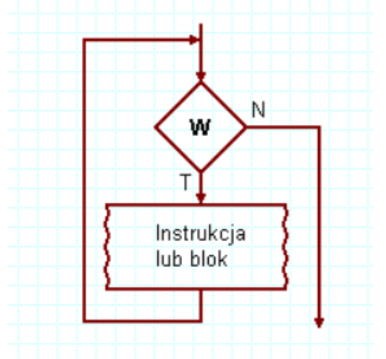

Rodzaje pętli
1. Pętla for
for (zainicjowanie_zmiennej; warunek_kończący_wykonywanie_pętli; zmiana_zmiennej) {
kod który zostanie wykonany pewną ilość razy
}

2. Pętla while -> z kontrolowanym wejściem
while (wyrażenie_sprawdzające_zakończenie_pętli) {
...fragment kodu który będzie powtarzany...
}
pętla while najpierw sprawdza warunek, potem coś wykonuje, pętla może się nie wykonać.

3. Pętla do while -> z kontrolowanym wyjściem
Do
{
...fragment kodu który będzie powtarzany...
} while (false)
pętla do...while zawsze wykona jedną iterację, zanim sprawdzi warunek. Zawsze więc wykona jakieś zadanie.